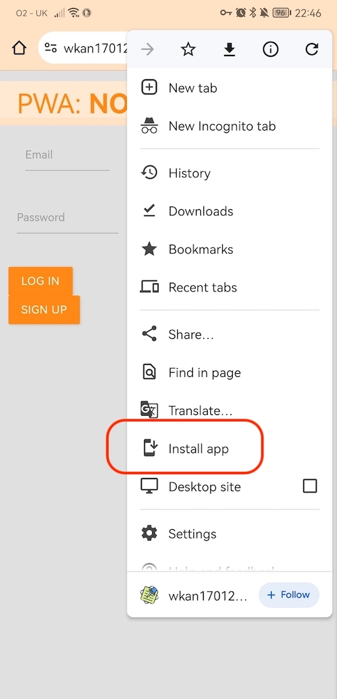

If viewing this app on a smartphone browser, navigate to home screen, then tap on your browser settings. Look for an option to install app - screenshot for guidance below.
This is a single json file which provides metadata about our application to the browser. The manifest file for this app includes:
Perhaps the most crucial component to a PWA. These javascript files allow for loading content when offline. When the user interacts when offline, the result is computed once they get online again, known as background sync. SWs allow for push notifications - notifications on new content, messages, updated content etc.
Traditionally, JS files are tightly coupled with the DOM along a single thread when requested by a web browser. SWs however, run on an isolated thread in the background and do not have access to the DOM. SWs can remain active on a mobile device even when the browser tab or app has been closed. Their job is to listen to events and fire fetch requests and push messages or notifications when the event is triggered.
It's important to consider for deployment, that SWs only work on pages that have been served on HTTPS connection. This is because SWs can intercept requests sent by the browser so they need to be secure. Localhost however is an exception for development ease.
SW files are typically placed in the project root so they can have global scope of the project i.e. it has access to any files which it may need through its lifecycle. The first step is to register the file, you can do this through a separate javascript file e.g. app.js. When this happens, the install event gets fired when the browser parses this line of code. This is a useful first step, as we can then perform some functionality like cache media assets.
Once registered and installed, the SW becomes active and an active event is triggered where the SW 'listens' for global events in the app.
If the code changes, the next time the page is refreshed, the new SW file will be registered and installed but remains in waiting i.e. not active. This is because the old SW code is still active and performing functionality. We need to wait until the old SW completes its lifecycle, then it will be swapped out for the in waiting new SW. Typically, the transition from old to new SW code happens when the app is refreshed or closed to reduce disturbance.
The approach will differ depending on what database solution you implement. Most likely, the IndexedDB API found in dev tools application tab, is commonly used as a temporary store before it is uploaded to the server or as a client-side cache.